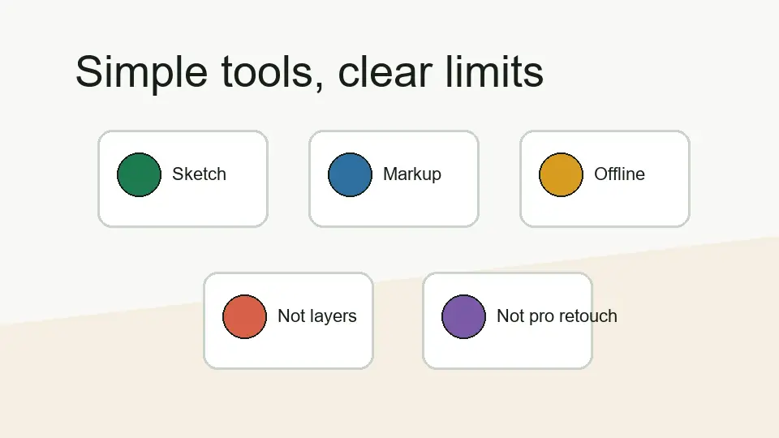

The practical feature story
PaintZ is not trying to be the biggest editor in the room. Its value is that it gives users a familiar drawing surface for quick paint-style work in a browser/Chrome OS setting.
Feature clarity
PaintZ is easiest to judge when you separate “simple paint tool” from “advanced editor.” This page keeps that line clear so the app is evaluated against the work it is actually suited for.

PaintZ is not trying to be the biggest editor in the room. Its value is that it gives users a familiar drawing surface for quick paint-style work in a browser/Chrome OS setting.
Feature table
| Area | Practical expectation | How I would treat it |
|---|---|---|
| Drawing | Useful for basic brush, shape, and paint-style work. | Good for quick sketches and simple visuals. |
| Editing | Fits light image edits and markups. | Use it for small tasks, not professional retouching. |
| Chromebook use | Strong fit for Chrome OS and browser-first workflows. | Best when you want a fast paint-style tool. |
| Offline behavior | Important part of the PaintZ value proposition. | Useful, but still test your save workflow before important use. |
| Advanced editing | Not the main purpose. | Use a dedicated editor for layers, masks, and complex work. |
Strength
The biggest strength is speed. When the task is simple, a focused paint app can feel better than a powerful editor because it avoids setup and decision fatigue.
Limit
If your project needs advanced export control, professional retouching, or complex composition, PaintZ is not the correct tool to force into that role.
Use PaintZ when you want a simple browser drawing app. Use something stronger when the work becomes layered, commercial, or detail-heavy. That is the cleanest way to avoid disappointment and still get value from the app.